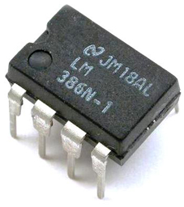

LM386 Audio Amplifier Analysis
The LM386 is a Voltage Audio Power Amplifier manufactured by National Semiconductor and JRC/NJM. This design (from the mid 70’s) has been always a popular choice for low-powered audio applications. It is a flexible device; the frequency response can be shaped with some external components and there are plenty of examples of clever circuits that people have come up with over the years.

Due to its low quiescent current drain and power consumption, it is suitable for portable battery-powered guitar mini amplifiers. Some of the best known are:
- Smokey Amp, the smallest and least expensive. Uses only 2 components and it is able to fit in a cigarette package.
- Little Gem, an enhanced version of Smokey Amp, adding new features and a gain/volume control.
- Ruby Amp, adds an input buffer to the Little Gem and also improves other sections of the circuit.
- Noisy Cricket, based on the Ruby amp, with gain/volume/tone controls, gives all capabilities of a guitar amp for a little money.
Table of Contents:
2 LM386 Internal Circuit Analysis.
2.1 Lin Topology.
2.2 Lin Topology in LM386.
2.2.1 LM386 Input Stage.
2.2.2 LM386 Voltage Amplifier Stage.
2.2.3 LM386 Output Stage.
2.2.4 LM386 Feedback network.
3 LM386 Frequency Response.
3.1 LM386 Bass Boost Frequency Calculation.
1. Electrical Characteristics.
The voltage gain can be adjusted from 20 to 200 (26 to 46 dB) with a wide supply voltage range: 4V-12V or 5V-18V depending on the model. There are three models: LM386N-1, LM386N-3, and LM386N-4, which can provide 0.325W, 0.7W and 1W respectively.
| Chip Name | Min VolT. | Max Volt. | Min. Out Power | Typ. Out Power |
| LM386N-1 | 4 Volts | 12 Volts | 250 mW | 325 mW |
| LM386N-3 | 4 Volts | 12 Volts | 500 mW | 700 mW |
| LM386N-4 | 5 Volts | 18 Volts | 700 mW | 1000 mW |
The inputs are ground referenced while the output automatically biases to one-half the supply voltage. It has a low quiescent current drain: 4mA (24 mW when operating from a 6 volt supply) and "low" harmonic distortion: up to 0.2% (AV = 20, VS = 6V, RL = 8Ω, PO = 125mW, f = 1KHz) with a worst case of 10%THD.
2. LM386 Internal Circuit Analysis.
The internal circuit is based on a classic audio power amplifier configuration typically referred as Lin Topology. Although old, it remains nearly unbeatable and almost all solid-state power amplifiers follow it.
2.1 Lin Topology.
The circuit can be divided into four main blocks: Input Stage, Voltage Amplifier Stage (VAS), Output Stage (OPS) and Feedback Network:
- The Input Stage: This differential amplifier formed by 2 transistors (Q1 and Q2) is the most common input stage today for audio circuits, also known as a long-tailed pair or LTP. Its major tasks are:
- Define the DC operating points.
- Set a high input impedance.
- To subtract the feedback signal from the input path in order to reduce distortion.
- The Voltage Amplifier Stage (VAS): This is the core of the power amplifier. Its job is to amplify the low-level signal generated by the input signal to a suitable level. Most VAS circuits work in class-A mode since they basically require only a small amount of current, and therefore power losses over the active device can be retained reasonably small. A basic VAS circuit is a common emitter amplifier.
The Q3 VAS transistor usually has some local Miller compensation capacitor (from Q3 transistor’s collector to base), this to limit the bandwidth, to upgrade stability and to improve linearity at higher frequencies.
- The Output Stage (OPS): It is a current amplifier working in either class-A, class-B or class-AB mode. The function of the output stage is to provide enough current gain so that voltage potential provided by VAS can exist over a low impedance load.
The simplest current amplifier is an emitter follower.
Combining two complementary transistors the emitter followers can be connected in a push-pull configuration where each transistor amplifies the current of its corresponding half wave. Such topology is known as Class-B amplifier, very efficient but subject to crossover distortion.
A typical configuration is to directly couple the bases of the output transistors to the collector of the VAS, thus the transistors do not require individual biasing (like the one shown in the image above).
A further improvement on the VAS is to upgrade it to Class-AB using a pair of diodes, reducing the efficiency but vastly improving the crossover distortion.
- The Feedback Network: its task is to send in some form the output signal to the VAS, this it has an important part in error correcting as well as in bandwidth and gain limiting. Feedback can be either local, global or a mixture of both. Feedbacking from the OPS to VAS, is used to limit the gain and set the DC operating points.
2.2 Lin Topology in LM386.
Following the Lin Topology, the LM386 internal circuit that can be found in the datasheet is divided into Input Stage, Voltage Amplifier Stage (VAS), output stage (OPS) and Feedback network:
2.2.1 LM386 Input Stage:
The first block is a PNP Emitter Follower amplifier (Q1, Q3), it sets the input impedance and defines the DC operation points, raising the input voltages off the ground so the circuit will accept negative input signal down to -0.4 V.
Both 50k input resistors (R1, R3) create the path to ground of the base current, the input needs to be coupled so not to disturb the internal biasing, hence the input impedance is dominated by these resistors and set to 50K.
Voltage Gain Analysis:
The differential amplifier Long Tailed Pair (Q2, Q4) gain is adjusted by two gain-setting resistors 1.35K + 150Ω (R5 + R5). External pins 1 and 8 provide access to adjust the gain from 20(min) to 200(max).
The voltage Gain can be calculated under quiescent conditions (no input signal applied) as follows:
- The voltage across R4 and R5 (Vdiff) is simply the differential input voltage (Vin) because the base-emitter voltage drops in the PNP transistors (Q1, Q2, Q3, and Q4) are the same in each side of the LTP.
- The current mirror formed by Q5 and Q6 generates equal currents on both sides of the LTP. This current is labeled "I".
Due to the current mirror, the current intensity through R8 is equal to 2I, neglecting the current (i7) through the two 15K resistors (R6, R7), which are large impedances compared to other parts of the circuit, thereby:
\[\frac{{V}_{out}-{V}_{in}}{{R}_{8}}= 2 I\]
\[{V}_{out} \gg {V}_{in}\]
\[\frac{{V}_{out}}{{R}_{8}}= 2 I\]
In the figure above, is easy to see that if i7=0 then:
\[I=\frac{{V}_{in}}{{R}_{4}+{R}_{5}}\]
So:
\[\frac{{V}_{out}}{{R}_{8}}= 2 \frac{{V}_{in}}{{R}_{4}+{R}_{5}}\]
\[{G}_{v}=\frac{{V}_{out}}{{V}_{in}}=2\frac{{R}_{8}}{{R}_{4} + {R}_{5}}\]
This formula can also be rewritten in a more generic way as:
\[{G}_{v}=\frac{{V}_{out}}{{V}_{in}}=2\frac{{Z}_{1-5}}{150 + {Z}_{1-8}}\]
Where Z1-5 and Z1-8 are the impedances between the respective pins.
- Without any external components, it has a gain of Gv = 2x15K/(150+1350) = 20 (26 dB).
- With a capacitor (or shortcutting) between pins 1 and 8 , it has a gain of Gv = 2x15K/150 =200 (46dB).
2.2.2 LM386 Voltage Amplifier Stage
The common emitter amplifier (Q7) amplifies the low amplitude input signal to a suitable level directly coupled to the output stage
2.2.3 LM386 Output Stage:
It is a class AB power amplifier, that is to say, a push-pull configuration where each transistor amplifies its corresponding half wave.
Because of the poor gain of the PNP transistors, Q9 and Q10 are in a compound PNP transistor configuration where βTOTAL = βQ9 x βQ10
Crossover Compensation:
The diodes D1 and D2 are used to compensate the crossover distortion.
In the Push-Pull topology, as a matter of fact, the transistors do not start conducting until the input signal begins to exceed their forward voltage (Vbe), which is the voltage over the base-emitter junction (typically around ± 0.6 V).
In order to counteract the transistor minimum limit to conduct (Vbe), they are biased so their idling voltage never drops below the forward voltage (Vbe). A specific amount of current, known as bias current, is constantly fed to the transistors’ bases to ensure that they keep conducting sacrificing efficiency.
Using a diode proved to be one of the best solutions: It offers a voltage drop which is temperature dependent and by matching the thermal coefficiency with the transistor the bias current can be kept quite stable. If an accurate thermal tracking is required the diodes are mounted to the same heatsink as power transistors. Since one diode usually is not enough, amplifiers often use several diode junctions, two in this case.
2.2.4 LM386 Feedback network:
Negative feedback is applied from the output to the emitter Q4 via resistor R8. This DC feedback acts to stabilize the output DC bias voltage to one-half the supply voltage.
Qualitatively, the dc feedback functions as follows: If for some reason Vo increases, a corresponding current increment will flow through R8 and into the emitter of Q4. Thus the collector current of Q4 increases, resulting in a positive increment in the voltage at the base of Q7. This, causes the collector current of Q7 to increase, thus bringing down the voltage at the base of Q7 and hence Vo.
Why Vout = Vcc/2 ?
The output automatically biases to one half the supply voltage, this is how it happens:
On quiescent conditions (no input signal applied), it is easy to see that Vbe1=Vbe3 and Vbe2=Vbe4, so the voltage in the Va node is exactly the same as in Vb, forcing Idiff = 0.
And now there are 2 approaches to get the same conclusion:
Approach 1:
The current mirror (Q5, Q6) balances the LTP, equalizing the current through both transistors (Q2, Q4) and improving the linearity of the input stage. Therefore, the currents on both tails are equal: both DC and AC components.
Since the currents "I" in the emitters of Q2 and Q4 are the same:
\[{V}_{7}=\frac{{V}_{cc}}{2}+{V}_{eb2}+{V}_{eb1} \approx \frac{{V}_{cc}}{2}\]
Because of the symmetry of the circuit, Vout = V7 ("Bypass" pin), making
\[{V}_{out}=\frac{{V}_{cc}}{2}\]
Approach 2:
Idiff=0 because V1 and V2 are at the same potential V1=V2
\[{I}_{Q2}=\frac{{V}_{cc}-{V}_{eb2}-{V}_{eb1}}{{R}_{6} + {R}_{7}}\]
\[{I}_{Q4}=\frac{{V}_{out}-{V}_{eb4}-{V}_{eb3}}{{R}_{8}}\]
Due to the current mirror IQ2=IQ4
\[\frac{{V}_{cc}-{V}_{eb2}-{V}_{eb1}}{{R}_{6} + {R}_{7}} = \frac{{V}_{out}-{V}_{eb4}-{V}_{eb3}}{{R}_{8}}\]
With Veb2= Veb4, Veb1=Veb3 and R6=R7=R8=15K:
\[{V}_{out}=\frac{{V}_{cc}}{2}+{V}_{eb1}+{V}_{eb2} \approx \frac{{V}_{cc}}{2}\]
\[{V}_{out}=\frac{{V}_{cc}}{2}\]
3. LM386 Frequency Response.
Looking at the LM386 Voltage Gain vs Frequency datasheet graph, the frequency response is flat in the audible region (up to 20KHz). Supplementary external components can be used to tailor the response to specific applications.
It may be interesting to modify the feedback loop between pins 5 and 1 that can be exploited for bass boost, and the more familiar feedback loop between pins 8 and 1 can also be modified to use different capacitor/resistor feedback combinations in parallel to yield differential gain for different frequency ranges.
The LM386 application data mentions a bass boost by connecting an RC network between pins 1 and 5 (paralleling the internal 15k resistor):
The amplifier is stable only for closed-loop gains greater than 9, so if the external resistor R is too small, the circuit could oscillate. Thereby, the minimum R can be calculated easily:
- If pin 8 is open: Rmin=10k, calculated as:
\[{G}_{v}=2\cdot\frac{{R}_{8}||{R}}{{R}_{4} + {R}_{5}} \to 9 < 2\cdot \frac{15K||{R}}{150 + 1.35K}\to R>12.2K\simeq10K\]
- If pins 1 -8 are bypassed: Rmin=2K, calculated as:
\[{G}_{v}=2\cdot\frac{{R}_{8}||{R}}{{R}_{4}} \to 9 < 2\cdot \frac{15K||{R}}{150}\to R>0.69K\simeq2K\]
3.1 LM386 Bass Boost Frequency Calculation:
For a 6 dB effective bass boost, the datasheet suggests R=10K and C=33nF between pins 1 and 5 with pin 8 open, another common set of values used are R=2K2 and R=4.7nF. Actually, this modification did not provide an active boost, just a roll-off at frequencies below the selected frequency, that is it a low pass filter.
This mod can successfully compensate a poor speaker bass response and filter the hissing noise, but in the other hand, if the circuit has a gain pot between pins 1 and 8 as Little Gem, Ruby Amp and Noisy Cricket do, the cut frequency will be modified with the gain value. Unfortunately, the bass boost will be gain dependent.
The effect of the bass boost RC network can be analyzed with the voltage gain equation above by inserting R + 1/jωC impedances in parallel to the internal Z1-5 feedback resistor.
\[{G}_{v}=2\cdot\frac{{Z}_{1-5}|| R + \frac{1}{j2\pi fC}}{150 + {Z}_{1-8}}\]
\[{G}_{v}=\frac{2}{150 + {Z}_{1-8}}\cdot\frac{{Z}_{1-5}\cdot (R + \frac{1}{j2\pi fC})}{{Z}_{1-5} + R + \frac{1}{j2\pi fC}}\]
\[{G}_{v}=\frac{2 {Z}_{1-5}R}{150 + {Z}_{1-8}}\cdot\frac{{Z}_{1-5}}{{j2\pi fC ({Z}_{1-5} + R)+1}}\]
\[{G}_{v}=\frac{1}{\frac{(150 + {Z}_{1-8}) \cdot j2\pi fC ({Z}_{1-5} + R)}{2({Z}_{1-5})^{2}R}+\frac{150 + {Z}_{1-8}}{2({Z}_{1-5})^{2}R}}\]
\[|{G}_{v}|=\frac{1}{ \sqrt{(\frac{(150 + {Z}_{1-8}) \cdot j2\pi fC ({Z}_{1-5} + R)}{2({Z}_{1-5})^{2}R})^{2}+(\frac{150 + {Z}_{1-8}}{2({Z}_{1-5})^{2}R})^{2}}}\]
So fc can be calculated:
\[{f}_{c}=\frac{\frac{150 + {Z}_{1-8}}{2({Z}_{1-5})^{2}R} \cdot 2({Z}_{1-5})^{2}R}{2\pi C(150 + {Z}_{1-8}) \cdot ({Z}_{1-5} + R)}\]
\[{f}_{c}=\frac{1}{2\pi C \cdot ({Z}_{1-5} + R)}\]
So, assuming that the Z1-5 internal resistance is 15K, the value of fc for the most common RC values can be calculated as follows:
- Using R=10K and C=33nF → fc= 1/2π x 33nF x (15K+10K)=192,2 Hz
- Using R=2,2K and C=4,7nF→ fc= 1/2π x 4.7nF x (15K+2,2K)=1968,7 Hz
Resources:
JRC386 Datasheet.
Teemuk Kyttala Solid State Guitar Amplifiers from (New) Japan Radio Co. JRC/NJM.
LM386 Datasheet from National Semiconductor.
LM38X Lecture by South Dakota School of Mines & Technology.
Stephan Großklaß LM386 Study.
Elliott Sound Products Study of Current Mirror Sources.
Thanks for reading, all feedback is appreciated